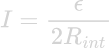
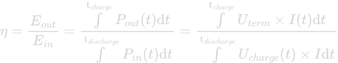

First testing and charging of the battery
The first testing the quality of a battery is testing of three quantities of the battery: - The charge/discharge-efficiency. - The overpotential as a function of current run through the battery. Knowing the relation between overpotential and current can tell you something about the internal resistance of the battery and the ideal current for best performance of the battery. - The terminal voltage as a function of time
Material
- Programmable power Supply (TTi QL335P linear regulated power)
- Digilent Analog Discovery 2
- Pstrace 5.9 by Palmsens (software)
- A rechargeable battery
Theory
In a system with no internal resistance, the current or potential through a resistor (or device) can be determined using Ohm’s law:
 (equation 1)
(equation 1)
Where U is the potential in V, I the electrical current in A and R the resistance in Ω. However, the device attached to the battery is not the only resistor in the circuit. The wiring to the the device from the cell and the cell itself also have resistance lowering the voltage through the device upon discharge. This resistance within the circuit is called the internal resistance Rint. The voltage over the battery within the circuit, considering internal restance, is called the terminal voltage Uterm. Upon discharge, Uterm is lower than the electric potential supplied by the chemical reaction within the battery because part of this potential is “claimed” by the internal resistance of the circuit. The electric potential supplied by the battery to the system is called the electromotive force ε. The terminal voltage can be calculated using the following equation [1]:
(equation 2)
Note that the electromotive force ε is not an actual force but has the unit V (J/C). Upon discharge, Uterm is the potential put on the external device. The ±-sign is then a minus, since the potential on the external device is lower than the potential supplied by the battery.
Upon charge, Uterm is the potential supplied by the charging device. The ±-sign is then a plus, because an overpotential is required to supply the voltage ε to the battery.
Also note that when Rint → 0, Uterm becomes ε. It is required to apply a current to measure the voltage in a circuit. This means it is only possible to acquire ε through extrapolation of measurements of Uterm as a function of I.
Considering equation 2 and that that power P = U * I, we can calculate the current at which the power supply of the battery peaks:
 (equation 3)
Measuring the charge/discharge efficiency and the the discharge voltage as a function of time
The charge/discharge efficiency is a measurement of efficiency in energy. The charge/discharge efficiency can be calculated using the following equation:
 (equation 4)
If your power supply can register the total energy it has used to charge the battery, there’s no need to use the third and forth part of the equation and you can just fill the used energy for charging in Ein.
If your power supply doesn’t show Ein, you’ll need to perform an integration on the used power. In the equation the quantities followed by (t), are the quantities which will need to be integrated over time. If your power supply can register you the used power in W, you’ll need to register the value of the power at periodically while charging. If your power supply only can show the voltage and current, you’ll need to register the current instead, given that the voltage is kept constant. The shorter the time interval of registering the power/current, the more precise the charge/discharge efficiency will be. It won’t be necessary to choose a set time interval. If the current is changing fast over time, it is best to register the often register the current. If the power/current is relatively constant in time, the time interval of registering its value can be longer.
There is a python script within the same folder as this document, which performs an Euler integration. Instructions on how to open and use the script are given in a txt-file in the same folder as the script.
Charging of the battery
It is now time to charge the battery. Since the efficiency is a quantity of interest, it is important to do this at a voltage as low as possible. It is also a goal to charge the battery as fast as possible. To do both satisfy these commands, we do the following:
We choose to vary the current. We start off at a current of 20 mA and slowly increase the current. To make sure we get a good efficiency and also prevent (too many) other half reactions from happening, we put a maximum voltage limit on the power supply of 1.43 V.
To measure Eout, we use the Digilent Analog Discovery 2 to measure the terminal voltage of the battery as a function of time at fixed current upon discharge. We discharge the cell with a current of 100 mA. In project_instructions.md, it is described how to do this using the Digilent Analog Discovery 2 and Pstrace 5.9. Again, the python script in the same folder as this document can be used to integrate the voltage to find the energy.
Overpotential measurement
For this measurement, we charge the battery again. How to do this is described above at “Charging of the battery”.
Equation 2 shows the terminal potential will decrease as a fucntion of current run through the battery. The scale of this drop down is unknown beforehand. To get a sense of this scale of the voltage as a function of current, we first conduct the following experiment:
First, we charge the battery. We then manually start at a current as low as possible and wait until the voltage becomes stable. Once stable, we increase the current and wait for the voltage to become stable again. We increase this step until we can make an educated gues on where the voltage goes to zero. Using the script, plot_overpotential.py from the Script_plot_overpotential folder, we plot our results. Instructions on how to use this script are within the same folder.
We then let the Digilent Analog Discovery 2 perform the same experiment. However, the charging of the battery is performed by hand again. The rest of the experiment can be performed using multistep potentiometry in Pstrace 5.9. How to use this program, project_instructions.md can be consulted. We chose the range of current to be at least 10% higher than where we determined that the voltage went to zero. We determine the time interval from how long it took for the voltage to become stable in last experiment. We chose the amount of measurements per time interval to be 2. When the measurements turn out be significantly differ from each other at same current, the amount of measurements should be increased in a future experiments.
Terminal voltage as a function of time
For this measurement, we charge the battery again. How to do this is described above at “Charging of the battery”.
We first charge the battery. By letting a constant current of 100 mA go through the battery, we measure the voltage as a function time. This can be done using a
What should be added to this document?
- This document should be merged with the project_instructions.md document, which describes how to actually measure the standard potential.
- Give a value for at what current the battery should discharge. 100 mA is an arbitrarily chosen value. Also give the name of the program of the Digilent Analog Discovery 2 you need to use if you want to know voltage as a function of time.
- Equation 4: U_term(t) instead of I(t), Pcharge instead of P_in, I also requires subscript
- Determine when charging of a battery is completed.
- Find out the name of the program in Pstrace 5.9 for determining the voltage as a function of time and find out how it works. Then finish the subsection: “Terminal voltage as a function of time”.
Bibliography
[1] Mahesh Shenoy (2021), Cells, EMF, terminal voltage & internal resistance, Khan Acadamy, https://www.khanacademy.org/science/in-in-class-12th-physics-india/in-in-current-electricity/x51bd77206da864f3:cell-emf-terminal-voltage-internal-resistance/v/cells-emf-terminal-voltage-internal-resistance